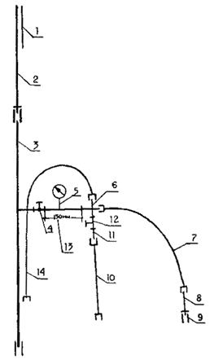
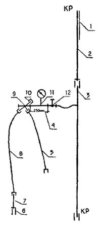
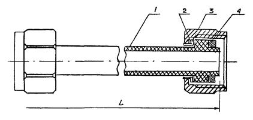
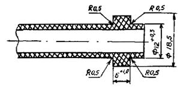
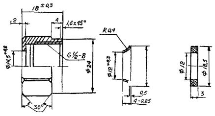
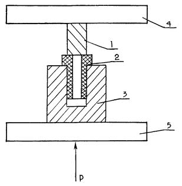

ДЕПАРТАМЕНТ СТРОИТЕЛЬСТВА
НАУЧНО-ТЕХНИЧЕСКОЕ УПРАВЛЕНИЕ МОССТРОЙЛИЦЕНЗИЯ
ВЕДОМСТВЕННЫЕ СТРОИТЕЛЬНЫЕ НОРМЫ
ПО МОНТАЖУ КОЛЛЕКТОРНЫХ СИСТЕМ
ВНУТРЕННЕГО ВОДОПРОВОДА ЗДАНИЙ
С ВОДОСЧЕТЧИКАМИ, ПОКВАРТИРНЫМИ
ЗАПОРНО-РАСПРЕДЕЛИТЕЛЬНЫМИ КРАНАМИ
И ГИБКИМИ ПОДВОДКАМИ
К САНИТАРНЫМ ПРИБОРАМ
ВСН 8-94
Москва-1996
СОДЕРЖАНИЕ
Настоящие строительные нормы разработаны лабораторией инженерного оборудования НИИМосстроя (к.т.н. В.Ф. Рябчичем, к.т.н. А.В. Сладковым, инженером Н.В. Митрофановой, лаборантом В.А. Ефремовым) в соответствии с заказом Департамента строительства на переработку ВСН 211-88 по монтажу коллекторных систем внутреннего водопровода зданий с гибкими подводками нового поколения ко всем санитарным приборам при участии отдела сантехоборудования МНИИТЭПа (инженера С.И. Прижижецкого) и Мосстройлицензии (Ю.И. Столяров, к.т.н. В.Д. Фельдман).
При составлении ВСН использован накопленный с 1989 г. опыт работы домостроительных комбинатов № 1, 2, 3, Хорошевского, Даниловского, Калибровского кабиностроительных заводов, МП "Санпласт" и Московского завода по ремонту башенных кранов.
Согласованы с Управлением монтажных, электромонтажных и санитарно-технических работ АО "Холдинговая компания Главмосстрой" и направлены на согласование предприятиям-изготовителям подводок и запорно-распределительных кранов (МП "Санпласт", завод по ремонту башенных кранов), проектным и монтажным организациям.
С введением в действие настоящих норм утрачивает силу ВСН-211-88 "Инструкция по монтажу коллекторных систем внутреннего водопровода с гибкими подводками нового поколения ко всем санитарным приборам".
|
Департамент |
Ведомственные строительные нормы |
ВСН 8-94 |
|
Научно-техническое |
Ведомственные строительные нормы по монтажу коллекторных систем внутреннего водопровода зданий с водосчетчиками, поквартирными запорно-распределительными кранами и гибкими подводками к санитарным приборам |
Взамен |
1.1. Настоящие нормы распространяются на монтаж, изготовление, проектирование и эксплуатацию коллекторных систем водопровода жилых и общественных зданий:
- внутреннего водопровода холодной воды с водосчетчиками, поквартирными запорно-распределительными кранами (КЗР) и гибкими подводками из труб полиэтилена высокого давления (ПВД);
- внутреннего водопровода горячей воды с водосчетчиками, коллектором из стальных оцинкованных труб, гибкой медной подводкой к смесителю ванны и умывальника и подводкой из стальных оцинкованных труб к смесителю кухонной мойки.
Примечание. Допускается использование в качестве гибких подводок труб из термостойких полимеров, в том числе металлополимерных труб, имеющих гигиенический сертификат.
1.2. При монтаже внутренних систем водопровода холодной и горячей воды следует учитывать общие требования СНиП 2.04.01-85 "Внутренний водопровод и канализация зданий" и СНиП 3.05.01-85 "Внутренние санитарно-технические системы".
1.3. Поквартирные запорно-распределительные краны изготавливаются по ТУ 400-2-509-91 "Кран запорно-распределительный для систем водоснабжения".
|
Внесены НИИМосстроем |
УТВЕРЖДЕНЫ |
Дата введения в действие |
1.4. Водопроводные подводки из труб полиэтилена высокого давления с наплавляемыми буртами изготавливаются по ТУ 400-28-169-85 "Подводки полиэтиленовые к водоразборной арматуре".
1.5. Коллекторные системы внутреннего холодного водоснабжения (рис. 1 а, б, в) с водосчетчиками, поквартирными запорно-распределительными кранами и подводками из труб полиэтилена высокого давления (ПВД) монтируются в домах массового жилищного строительства высотой до 25 этажей с санитарно-техническими кабинами производства АО Хорошевский кабиностроительный завод ЖБИ ДСК-1, а также производства АО Калибровский и Даниловский кабиностроительные заводы.
Примечания: 1. В сантехкабине марки УК-1М для подсоединения смесителя ванны к стояку водопровода горячей воды следует использовать медную подводку диаметром 13,5 мм, длиной 500 мм с двумя металлическими гайками, а для подсоединения смесителя кухонной мойки - стальную оцинкованную трубу длиной 1140 мм и диаметром 15 мм (рис. 2) согласно ТУ 400-2-174-93 "Кабины санитарно-технические гипсобетонные для жилых и общественных зданий".
2. Полиэтиленовые подводки из ПВД с КЗР могут быть использованы для подсоединения арматуры к санитарным приборам при монтаже водопровода холодной воды из отдельных трубозаготовок в малоэтажных зданиях и зданиях коттеджного типа.
1.6. Конструктивными элементами коллекторных систем являются:
- подающий стояк водоснабжения (трубозаготовка стояка) из стальных оцинкованных труб диаметром 25 мм;
- муфтовый запорный вентиль диаметром 15 мм;
- водосчетчик;
Рис. 1 (а, б, в). Схема коллекторной системы холодного водопровода с водосчетчиком, с поквартирным запорно-распределительным краном и полиэтиленовыми подводками к санитарным приборам в санитарно-технических кабинах:
а) марка УК-1 (вариант Даниловского кабиностроительного завода):
1 - стальная гильза; 2 - междуэтажная вставка; 3 - подающий стояк холодного водопровода; 4 - муфтовый запорный вентиль; 5 - проставка; 6-9 - полиэтиленовые подводки к водоразборной арматуре (к смывному бачку унитаза и к смесителю ванны и умывальника); 7 - муфта; 8 - бочонок; 10 - поквартирный запорно-распределительный кран; 11 - заглушка; 12 - водосчетчик

б) марка 1К-1М (вариант АО Хорошевский кабиностроительный завод):
1 - стальная гильза; 2 - междуэтажная вставка; 3 - подающий стояк холодного водоснабжения; 4 - муфтовый запорный вентиль; 5 - место установки счетчика расхода воды; 6 - тройник; 7, 10, 14 - полиэтиленовые подводки к водоразборной арматуре (к смесителю ванны и умывальника, к смывному бачку унитаза и к смесителю кухонной мойки); 8 - сгон с контргайкой; 9 - муфта; 11 - бочонок; 12 - муфтовый запорный вентиль; 13 – проставка

в) марка УК-1 (вариант АО Калибровский завод):
1 - стальная гильза; 2 - междуэтажная вставка; 3 - подающий стояк холодного водоснабжения; 4 - проставка; 5, 8 - полиэтиленовые подводки соответственно к смывному бачку унитаза и к смесителю ванны и умывальника; 6 - муфта; 7 - бочонок; 9 - поквартирный запорно-распределительный кран; 10 - заглушка; 11 -водосчетчик; 12 - муфтовый запорный вентиль
Рис. 2. Схема водопровода горячего водоснабжения со счетчиком расхода воды и с медной подводкой к смесителю каины и умывальника (марка кабины 1К-1М):
1 - стальная гильза; 2 - междуэтажная вставка; 3 - подающий стояк горячего водопровода; 4 - муфтовый запорный вентиль; 5 - счетчик расхода поды; 6 - бочонок с муфтой; 7 - стальная оцинкованная труба диаметром 15 мм для подсоединения к смесителю кухонной мойки; 8 - медная подводка с металлическими гайками для подсоединения к смесителю ванны и умывальника; 9 - сгон с контргайкой и муфтой; 10 - проставка
- поквартирный латунный запорно-распределительный кран (КЗР) диаметром 15 мм (рис. 3) или латунный тройник;
- гибкие подводки из труб полиэтилена высокого давления с наплавляемыми буртами (рис. 4) наружным диаметром 12´2 мм с двумя латунными накидными гайками под ключ S = 24 мм к водоразборной арматуре.
Узел КЗР (или латунный тройник) с гибкими подводками служит для присоединения к подающему стояку всех видов водоразборной арматуры (смесителей ванн, умывальников, кухонных моек, смывных бачков унитазов и др.).
1.7. Для изготовления запорно-распределительных кранов применяют латунь марки ЛЦ 40с по ГОСТ 17711-80.
1.8. Поквартирные запорно-распределительные краны предназначены для установки во внутренних коллекторных системах холодного водопровода зданий с целью распределения потока между санитарно-техническими приборами квартиры.
1.9. Основные параметры крана приведены в табл. 1.
Таблица 1
|
Наименование |
Параметр |
|
Рабочая среда |
Вода питьевая по ГОСТ 2874-82 |
|
Давление рабочее, МПа |
до 0,63 |
|
Пропуск через затвор |
1 кл. ГОСТ 9544-75 |
|
Усилие на маховичке, Н.М |
0,2 |
|
Масса, кг |
0,27 |
|
Проход условный (по входным и выходным муфтам), мм |
15 |
1.10. Для изготовления подводок применяют трубы полиэтилена высокого давления (ПВД) диаметром 12´2 по ГОСТ 18599-83.
1.11. Водопроводные подводки из труб ПВД предназначены для систем внутреннего хозяйственно-питьевого водопровода с давлением до 1 МПа при температуре воды до 30 °С.
Рис. 3. Латунный запорно-распределительный кран (КЗР)
 

Рис. 4. Конструкция
полиэтиленовой водопроводной подводки с наплавляемыми буртами:
а) конец подводки с наплавленным буртом; б) накидная гайка из латуни и детали
соединений:
1 - полиэтиленовая труба (ПВД 12Т); 2 - латунная накидная гайка; 3 - латунная втулка; 4 - резиновая прокладка
1.12. Основные физико-механические свойства труб из ПВД приведены в табл. 2.
Таблица 2
|
Показатели |
Значения показателей |
|
Плотность, г/см3 |
0,92 - 0,93 |
|
Предел текучести при растяжении, МПа |
9,3 - 11,0 |
|
Относительное удлинение при разрыве, % |
250 |
|
Модуль упругости, МПа |
200 |
|
Тепловой коэффициент линейного расширения, 1/С×10-5 |
20 |
|
Теплостойкость по ВИКА, °С |
30 |
Примечания: 1. Приведенные показатели характеризуют свойства материала при 20 °С.
2. У показателей предела текучести при растяжении и относительного удлинения при разрыве верхние пределы относятся к средним значениями величин, а нижние пределы - к минимальным значениям.
1.13. Монтаж коллекторных систем внутреннего холодного водопровода зданий с гибкими подводками к санитарным приборам осуществляется в соответствии с проектной документацией МНИИТЭПа, требованиями настоящих норм, общими требованиями СНиП 2.04.01-85 "Внутренний водопровод и канализация зданий" и СНиП 3.05.01-85 "Внутренние санитарно-технические системы".
2.1. Коллекторные системы (стальные элементы) могут изготавливаться как в условиях трубозаготовительного предприятия - МП "Санпласт" (121096, Москва, ул. Василисы Кожиной, 14, тел. 142-47-75), так и на кабиностроительных заводах. Запорно-распределительные краны (КЗР) изготавливаются заводом по ремонту башенных кранов (123290, Москва, 1-й Магистральный тупик, 5, тел. 940-06-40). Подводки из труб ПВД 12Т с наплавляемыми буртами изготавливаются на МП "Санпласт" и на заводе по ремонту башенных кранов.
2.2. Подающий стояк диаметром 25 мм и резьбовые патрубки диаметром 15 мм изготавливаются из стальных оцинкованных водогазопроводных труб по ГОСТ 3262-75.
2.3. Технологический процесс изготовления стояков и резьбовых патрубков должен быть основан на поточном методе производства работ, включающем операции по разметке и отрезке труб, нарезанию резьбы, сверлению отверстий и сварке труб. Указанные работы должны выполняться в соответствии с действующими техническими условиями на изготовление водопроводных трубозаготовок из стальных труб.
2.4. Стальные резьбовые патрубки, предназначенные для соединения с подводками, должны быть отторцованы.
2.5. Сварка стояков со стальными резьбовыми патрубками должна производиться в соответствии с требованиями, предъявляемыми к сварке оцинкованных труб.
2.6. Поквартирный запорно-распределительный кран изготавливается из латуни ЛЦ 40д по ГОСТ 17711-80. Условный проход по входным и выходным штуцерам (муфтам) 15 мм.
Пример условного обозначения крана:
КЗР ТУ 400-2-508-91 кран запорно-распределительный.
2.7. Для изготовления подводок применяют трубы тяжелого типа (Т) полиэтилена высокого давления с маркировкой "Питьевая" по ГОСТ 18599-83. Номинальный средний наружный диаметр и толщина стенки труб соответственно равны 12,0+0,3 и 2,0+0,4 мм.
Пример условного обозначения труб:
Труба ПВД 12Т питьевая ГОСТ 18599-83.
Материалом для труб служит гранулированный полиэтилен высокого давления (ГОСТ 16337-77Е) марки 102-14, высшего и первого сортов.
При изготовлении труб не допускается смешивать полиэтилен разных марок и использовать в качестве добавок вторичное сырье.
2.8. Технология изготовления подводок с наплавляемыми буртами включает следующие операции: резку труб; установку одного конца трубы в пресс-форму термопластавтомата и последующего оформления бурта путем впрыска в нее дозированного расплавленного материала; установку латунных накидных гаек и втулок; оформление бурта на другом конце трубы.
2.9. Для наплавления буртов на подводках используются термопластавтоматы с объемом впрыскиваемого материала 63 см3 и 125 см3 при нормальном давлении литья до 140 МПа с температурой пластификации 350 - 370 °С.
2.10. Оснасткой к термопластавтомату для наплавления буртов к концам труб служит разъемная многогнездная пресс-форма, состоящая из двух полуформ. Полуформы имеют полуцилиндрические гнезда, соответствующие размерам буртов. В гнезда поступает из материального цилиндра литьевой машины жидкотекучая гомогенизированная масса расплава. Одна из гнезд полуформ, соединенная каналом с материальным цилиндром, неподвижна. Другая полуформа подвижна и снабжена подпружинивающим устройством и направляющими стержнями (знаками). Знаки диаметром 8 мм и длиной 60 - 70 мм служат для установки на них до упора концов полиэтиленовых труб.
2.11. Подпружинивающее устройство осуществляет отвод обоймы с полуцилиндрическими гнездами от знаков, что позволяет осуществить снятие с них готовых подводок.
2.12. Технологические режимы наплавления буртов следующие:
- давление впрыска материала, МПа 8,5
- выдержка под повышенным давлением, с 5
- выдержка под пониженным давлением, с 2
- охлаждение, с 13
- полный цикл наплавления буртов, с 20
- температура сопла, °С 250
- температура обогрева, °С:
III зоны 255
II зоны 260
I зоны 257
2.13. Разметку и отрезку полиэтиленовых труб следует производить на специальном устройстве, оборудованном мерной линейкой, подвижным упором и приспособлением для отрезки.
В качестве отрезного устройства могут служить подвижные ножи гильотинного типа, "стуловые" ножницы и т.п.
2.14. Концы труб должны быть отрезаны перпендикулярно оси трубы и зачищены от заусенцев.
2.15. Форма и габариты подводок должны соответствовать рабочим либо монтажным чертежам, разработанным и утвержденным в установленном порядке. По согласованию с потребителем допускается изготовление подводок с гнутым участком.
Радиус гнутья подводок в горячем состоянии должен быть не менее 4-5 наружных диаметров трубы.
2.16. Для изготовления подводок используются латунные накидные гайки.
2.17. Втулки под накидные гайки подводок можно изготавливать из латунной трубки или листового проката.
2.18. Подводки должны комплектоваться резиновыми прокладками, изготовленными из листовой резины (ГОСТ 17133-83), допускаемой к контакту с пищевыми продуктами.
2.19. Упаковка полиэтиленовых подводок в количестве свыше 100 шт. производится в бумажные мешки (ГОСТ 2226-75), при меньшем количестве подводки допускается перевязывать шпагатом в компактные пучки.
2.20. Каждая партия подводок должна быть снабжена биркой с указанием:
- предприятия-изготовителя;
- наименования изделия и номера ТУ;
- номера заказа;
- отметки отдела технического контроля;
- даты изготовления заказа.
2.21. Поквартирные запорно-распределительные краны должны быть упакованы в картонные коробки или деревянные ящики. Упаковка должна предохранять краны от повреждений при транспортировании и хранении.
2.22. Вес картонных коробок с КЗР (брутто) не должен превышать 30 кг, а при упаковке в ящики - 50 кг.
2.23. Предприятие-изготовитель должно сопровождать каждую партию поставляемых запорно-распределительных кранов документом установленной формы, удостоверяющим их качество, в котором указывается:
- наименование и адрес предприятия-изготовителя;
- номер и дата выдачи документа;
- наименование и количество запорно-распределительных кранов в партии;
- результаты испытаний;
- номер Технических условий.
3.1. Работы по монтажу коллекторных систем с узлами КЗР и гибкими подводками должны выполняться специально обученным техническим персоналом, ознакомленным со свойствами труб из полимерных материалов.
3.2. При монтаже, погрузочно-разгрузочных операциях, транспортировании, хранении КЗР, водосчетчики, подводки необходимо оберегать от механических повреждений, ударов.
3.3. КЗР, водосчетчик, подводки можно транспортировать любым видом транспорта в соответствии с правилами перевозок грузов, действующими на данном виде транспорта.
3.4. Хранить подводки следует в горизонтальном положении на стеллажах, в отапливаемых помещениях. Условия хранения должны исключать возможность деформирования подводок, воздействия на них прямых солнечных лучей, попадания масел, жиров и нефтепродуктов
3.5. КЗР должны храниться в сухих закрытых помещениях в запакованном виде.
3.6. Водосчетчики без потребительской тары должны храниться в сухом закрытом помещении при температуре 23 ± 5 °С.
3.7. Переносить или перевозить счетчики с места на место следует в упаковке, обеспечивающей их сохранность при транспортировании.
3.8. Сборка металлических элементов коллекторных систем осуществляется в условиях трубозаготовительного производства.
Примечание. По согласованию с заказчиком допускается сборка узлов КЗР с полиэтиленовыми подводками на кабиностроительных заводах или в мастерских на объекте монтажа.
3.9. Металлические элементы систем (подающие стояки, резьбовые патрубки, КЗР, запорная арматура и др.) соединяются между собой с помощью резьбовых соединений, уплотняемых традиционными методами.
3.10. Прокладка подающих стояков водопровода должна осуществляться преимущественно в монтажных коммуникационных шахтах санитарно-технических кабин в строго проектном положении, обеспечивающем свободный доступ к запорной арматуре, водосчетчику и соединительным узлам трубопроводов.
Примечание. Допускается выполнять прокладку стояков в малоэтажных зданиях или зданиях коттеджного типа по специальным проектам.
3.11. Крепление стояков должно исключать возможность их проворачивания в процессе монтажа.
3.12. Подсоединение полиэтиленовых подводок к КЗР, настенному смесителю ванны (рис. 5) и штуцеру смывного бачка унитаза осуществляется кабиностроительными заводами, а к смесителю кухонной мойки - в построечных условиях.
Примечание. По согласованию с домостроительными комбинатами и трестами санитарно-технических работ подсоединение подводок к КЗР, смесителям ванн и смывным бачкам унитазов может осуществляться в построечных условиях.
Рис. 5. Конструкция узла для подсоединения полиэтиленовой подводки к настенному смесителю ванны для санитарно-технических кабин из асбестоцемента (а) и гипсобетона (б):
1 - резьбовой патрубок под накидную гайку подводки; 2 - контргайка; 3 - перегородка из асбестоцемента или гипсобетона; 4 - муфта под штуцер смесителя
3.13. Подсоединение подводок следует осуществлять после окончания работ по монтажу подающих стояков системы водоснабжения и санитарных приборов.
3.14. При монтаже подводки следует сначала присоединить к КЗР, а затем к штуцерам водоразборной арматуры.
3.15. Сборку соединений рекомендуется производить вручную до упора с доверткой накидных гаек ключом на 0,5 - 1 оборот.
3.16. После сборки подводка не должна проворачиваться вручную в отверстии накидной гайки. В этом случае рекомендуется установка двух прокладок.
3.17. При обнаружении течи в соединениях следует подтянуть накидные гайки или сменить резиновые прокладки.
3.18. Расстояние в свету между подводками и параллельно проложенными стальными трубами отопления (или горячего водоснабжения) должно быть не менее 100 мм. Пластмассовые трубы должны проходить, как правило, ниже труб отопления и горячего водоснабжения.
Расстояние в свету между пересекающимися пластмассовыми трубами и стальными трубами отопления и горячего водоснабжения должно быть не менее 50 мм При невозможности выполнить это условие участок стального трубопровода в месте пересечения должен быть теплоизолирован.
3.19. При монтаже необходимо исключать перегибы подводок и их кручение. Радиус изгиба подводок в холодном состоянии должен быть 15 - 20, но не менее 5 наружных диаметров трубы.
3.20. В местах возможного повреждения, а также для выполнения требований п.п. 3.18 и 3.19 подводки следует крепить к строительным конструкциям с помощью крепежных хомутов и скоб (пластмассовых или металлических с пластмассовыми прокладками).
3.21. Санитарно-технические кабины поставляют на строительный объект в укомплектованном виде, со смонтированными и предварительно спрессованными трубопроводами систем водоснабжения.
Примечания: 1. В комплекте инженерного оборудования сантехкабин предусмотрены два счетчика холодной и горячей воды и две монтажные проставки. Счетчики, как правило, устанавливает эксплуатирующая организация.
2. По согласованию с потребителем допускается поставка сантехкабин без установки отдельных комплектующих изделий (умывальников, унитазов, смывных бачков унитазов, водосчетчиков, КЗР и др.) с последующей их выдачей самовывозом.
3.22. Для предотвращения засорения трубопроводов их концы должны быть закрыты инвентарными заглушками.
3.23. В построечных условиях монтаж коллекторных систем внутреннего водопровода осуществляется путем соединения подающих стояков с помощью междуэтажных вставок и установки водосчетчиков и узлов КЗР с полиэтиленовыми подводками (к смесителю кухонной мойки).
4.1. Металлические элементы коллекторных систем водоснабжения должны удовлетворять следующим требованиям:
- трубная резьба стальных патрубков, штуцеров, латунных КЗР и накидных гаек должна быть чистой, без срывов, не иметь забитых ниток и заусенцев;
- внутренние поверхности гаек, контактирующие с полиэтиленовыми трубами, должны быть гладкими, без острых кромок. Качество резьбы патрубков, штуцеров и КЗР проверяется с помощью резьбового калибра-гайки (навинчивание производится от руки).
Качество резьбы накидных гаек и входного патрубка КЗР проверяется с помощью резьбового калибра-пробки, ввинчиваемого в накидные гайки и входной патрубок КЗР также от руки.
4.2. При внешнем осмотре КЗР не допускается наличие трещин, облоя и др. дефектов, влияющих на работоспособность изделия.
4.3. Испытания на прочность и плотность материала крана, а также на герметичность сальника шпинделя вентильной головки, прокладочного соединения и затвора следует проводить на кранах в собранном виде водой давлением Рр = 1,5 МПа.
4.4. Испытания КЗР следует проводить при установившемся давлении в течение времени, необходимого для осмотра крана, но не менее 10 секунд.
4.5. Испытания КЗР должны проводиться на заводских либо сторонних испытательных средствах специализированными подразделениями.
4.6. Диаметр отверстий в задней стенке накидной гайки с учетом допусков на наружный диаметр полиэтиленовой трубки должен быть равен 14,0+0,2 мм.
4.7. Накидная гайка должна свободно проворачиваться на втулке.
4.8. После наплавления бурта на трубе ПВД в переходных зонах не должно быть наплывов.
4.9. Контроль качества подводок из ПВД труб осуществляется заводом-изготовителем.
Примечание. По согласованию с заводом контроль качества труб и подводок может выполняться НИИМосстроем.
4.10. Полиэтиленовые подводки подвергаются испытаниям, при которых определяют показатели, указанные в табл. 3.
Таблица 3
|
Показатель |
Минимальное количество образцов |
Периодичность испытаний |
|
Внешний вид поверхности подводок и соединительных деталей |
5 |
1 раз в смену |
|
Размеры подводок и соединительных деталей |
5 |
1 раз в смену |
|
Величина предела текучести при растяжении и относительное удлинение при разрыве материала подводки |
5 |
Для каждой партии труб, но не менее 1 раза в 6 месяцев |
|
Прочность соединения бурта с полиэтиленовой трубой (на отрыв и на сдвиг) |
5 |
То же |
|
Стойкость подводок к внутреннему гидростатическому давлению: |
|
|
|
- при нормальной температуре (20 °С) |
5 |
То же |
|
- при повышенной температуре (70 °С) |
5 |
То же |
4.11. Внешний вид поверхности подводок, а также соединительных деталей определяют визуально сравнением контролируемых образцов с эталонным, утвержденным в установленном порядке.
Поверхность трубы должна быть ровной, гладкой и не иметь трещин, вздутий, раковин, продольных рисок. Не допускается наличие разрывов и вмятин на бурте, особенно на его поверхности, соприкасающейся с уплотнителем.
4.12. Линейные размеры подводок и соединительных деталей проверяются мерительным инструментом (штангенциркуль, линейка измерительная, микрометр по ГОСТ 166-80, ГОСТ 427-75, ГОСТ 6507-77).
4.13. Замер среднего наружного диаметра производят в трех местах образца с точностью до 0,1 мм на расстоянии не менее чем 100 мм от торца подводки. Средний внутренний диаметр замеряют в двух взаимно перпендикулярных направлениях в каждом контролируемом месте с обоих торцов подводки. Толщину стенки подводки измеряют с обоих торцов в четырех равномерно распределенных по окружности точках на расстоянии не менее 10 мм от торца. Измерения проводят с погрешностью не более 0,01 мм. Вычисляют среднее арифметическое значение толщины для каждого торца образца, округляют до первого десятичного знака.
4.14. Толщину бурта замеряют в четырех равномерно распределенных по окружности точках с точностью до 0,1 мм и принимают как среднее арифметическое значение этих замеров.
4.15. Относительное удлинение при разрыве труб из ПВД определяют по ГОСТ 18599-83, и оно должно быть равно 250 %. Предел текучести при растяжении - 9,3-11,8 МПа. Образцы труб испытывают при скорости движения подвижного захвата разрывной машины (100 ± 10) мм/мин. Этим показателям соответствует минимальное усилие при достижении предела текучести труб, равное 595 Н (59,5 кгс), и минимальное расстояние между зажимами разрывной машины 210 мм.
Схема испытаний трубного образца на растяжение приведена на рис. 6.
4.16. Прочность соединения наплавляемого бурта с полиэтиленовой трубой проверяется испытанием на отрыв бурта относительно трубы. Испытания проводят на любой разрывной машине, позволяющей осуществить данные испытания при скорости перемещения подвижного захвата машины 100 мм/мин. Для закрепления конца образца с буртом и накидной гайкой должны быть предусмотрены специальные зажимы (рис. 7), а с противоположного торца внутрь патрубка во избежание смятия вставляется резиновая пробка. Полученное при испытаниях усилие должно быть не менее 595 Н.
4.17. Испытания (рис. 6, 7) проводят на патрубках длиной 16 ± 5 мм. Внутрь патрубков во избежание смятия следует вставлять резиновые пробки длиной 30 мм. Пробки вырезают из колец, используемых при соединении канализационных трубопроводов диаметром 50 мм по ТУ ЗАГ-4-167-85.
Рис 6. Схема испытаний трубного образца на растяжение:
1,5 - зажимы для крепления образца; 2 - полиэтиленовая труба; 3, 4 - резиновый вкладыш
Рис. 7. Схема испытаний при определении прочности соединения полиэтиленовой трубы с наплавляемым буртом:
1- крепежный штырь; 2 - крепежная обойма; 3 - стальная труба; 4 - резиновая прокладка; 5 - латунная накидная гайка; 6 - латунная втулка; 7 - трубный образец с наплавляемым буртом; 8 - резиновая пробка; 9 - зажим для крепления образца
При замере патрубков за базу относительного удлинения при разрыве принимают базу 50 мм.
4.18. Прочность соединения трубы ПВД с наплавляемым буртом при испытании на сдвиг (скорость перемещения подвижного захвата разрывной машины 20 мм/мин) должна быть не менее 1560 Н. Испытания на сдвиг проводят с использованием разрывной машины или пресса (рис. 8).

Рис. 8. Схема испытаний прочности наплавляемых буртов на сдвиг:
1 - пуансон; 2 - трубный образец; 3 - матрица; 4, 5 - зажимы пресса
Испытуемый образец представляет собой отрезанный перпендикулярно оси трубы конец подводки высотой 25 мм. Образец устанавливается в отверстие диаметром 13 мм полого цилиндра высотой 25 мм. Сдвиг трубки относительно неподвижного бурта осуществляется цилиндрическим наконечником диаметром 12 мм и высотой 20 мм. Испытание считается законченным при перемещении наконечника на высоту бурта.
4.19. Металлические элементы коллекторных систем должны испытываться на заготовительном предприятии гидравлическим давлением в 1 МПа в течение двух минут или пневматическим давлением в 0,15 МПа в течение 0,5 минут. При этом падение давления по манометру не допускается.
4.20. Полиэтиленовые трубы и подводки из ПВД при нормальной температуре (20 °С) испытываются при начальном напряжении в стенке трубы, равном 6,86 МПа (внутреннее гидростатическое давление при номинальных значениях наружного диаметра и толщины стенки 2,8 МПа в течение 1 часа).
Испытания при повышенной температуре (70 °С) проводятся при начальных напряжениях 3,14 и 2,45 МПа (внутреннее гидростатическое давление при номинальных значениях наружного диаметра и толщины стенки 1,28 и 1 МПа) соответственно 1 и 100 часов.
4.21. Трубы и подводки должны выдерживать испытания (см. п. 4.20) без признаков разрушения. При каждом уровне напряжений испытания проводятся на пяти произвольно отобранных образцах.
При неудовлетворительных результатах хотя бы по одному показателю этот показатель контролируется повторно на удвоенном количестве образцов, взятых из той же партии. Результаты повторного испытания являются окончательными и распространяются на всю партию.
4.22. Коллекторные системы внутреннего водопровода в условиях заводов по выпуску санитарно-технических кабин испытывают гидравлическим давлением в 1 МПа в течение 2 минут. За время испытаний падения давления по манометру не допускается.
4.23. Приемка коллекторных систем в эксплуатацию производится в соответствии с действующими правилами. При этом должен осуществляться предварительный визуальный контроль всех смонтированных полиэтиленовых подводок (перегибы труб, недопустимые радиусы изгиба, продольное скручивание, механические повреждения, соприкосновения со стальными трубопроводами горячего водоснабжения не допускаются).
4.24. Установка, проверка и ремонт счетчиков воды АО "Чистопольский часовой завод "Восток" должны производиться, как правило, станциями сервисного обслуживания Хорошевского, Даниловского и Калибровского кабиностроительных заводов.
5.1. Работы по монтажу водопроводных подводок должны проводиться после окончания сварочных и других работ.
5.2. Литьевые машины для изготовления подводок с наплавляемыми буртами должны обеспечивать безопасные условия работ.